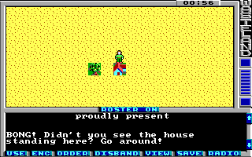

Game Tutorial Step 3: Making squares impassable
With action class 11 (b) you can create squares which are not passable by the player. Additionaly a message can be printed when the player tries to enter the square. This action class also can change the action class and the action of the square by using the attributes newActionClass and newAction which we will not use in this example.
Like in the previous step first create a new action container for all the impassable actions and add your new action to it:
<actions actionClass="0xb"> <impassable id="0" message="2" /> </actions>
We reference a message string with id 2 here so we have to add it as well:
<string id="2">\rBONG! Didn't you see the house standing here? Go around!\r</string>
And now as usual connect a square for it by setting the squares action class to b and the action to 00. This time we set the tile 77 which is a small house.
Pack the new game file, start up wasteland and you can bang your head against the house.
You can download the current state of the map here: map01.xml.
